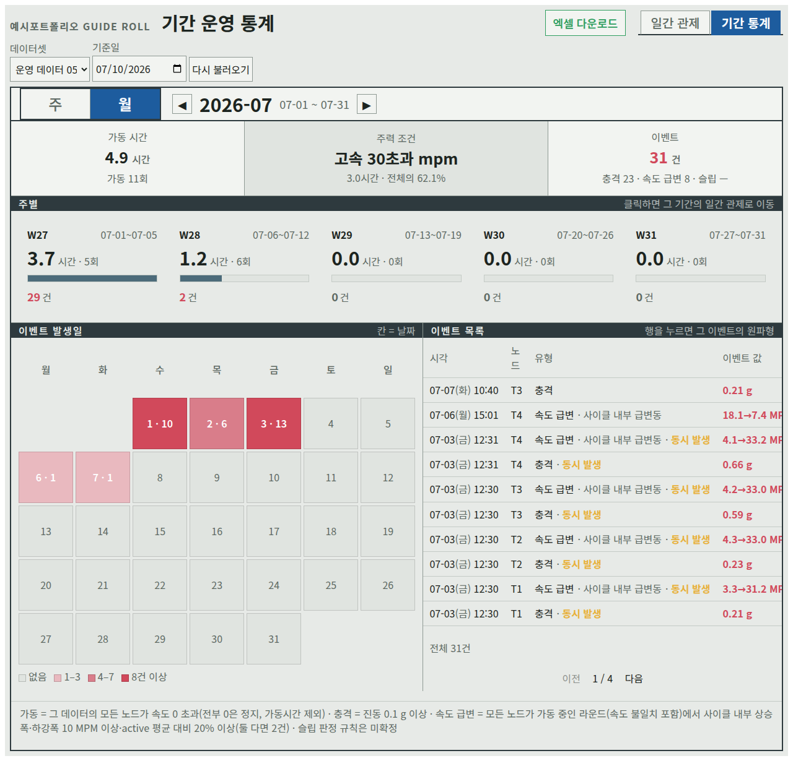
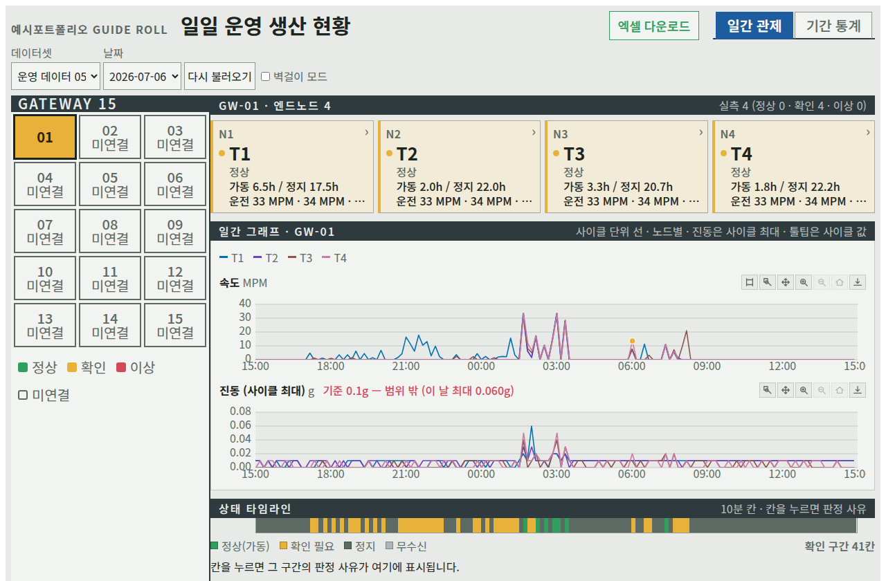

제조 지표 정의 재합의와 '항상 맞아야 할 규칙' 검증
광학필름 생산 라인의 가이드롤(동력 없이 필름 장력으로 도는 롤)에 붙은 센서 노드 4대가 10분마다 11초씩 속도·진동을 측정하고, 이를 FastAPI·React 대시보드로 보여 주는 시스템입니다. 통계 화면에 가동 1.2시간 · 가동 0회가 함께 표시되는 모순이 있었습니다. 원인은 두 지표의 판정 기준 차이였습니다. 가동 횟수는 30분 이상 이어진 구간만 세고, 가동 시간은 길이와 무관하게 합산해, 10분 가동 6회가 횟수에서는 빠지고 시간에는 1.2시간으로 들어갔습니다.
"가동 1회"의 정의를 현장과 다시 합의하고, 합산 함수를 단일화해 일간·주별·월별 화면이 같은 함수를 사용하도록 했습니다.
함수 한 곳


"움직인 시간"과 "생산 가동"은 다른 지표다
같은 센서 사이클 한 행이 화면 세 곳에서 세 가지 규칙으로 "가동"인지 판정됩니다. 노드 카드는 속도가 0만 아니면 가동, 기간 통계는 모든 노드가 함께 1 MPM 이상으로 돌아야 가동, 공정 분류는 0~1 MPM을 판정 보류로 둡니다. 어느 쪽이 현장의 "가동"인지는 생산 라벨이 없어 아직 정하지 않았습니다.
| 입력 (합성 · 노드 4대, 10분 간격) | ① 노드 카드 | ② 기간 통계 | ③ 공정 후보 분류 |
|---|---|---|---|
| A 정상 — 전부 33 MPM | 가동 | 가동 | 생산 후보 |
| B 정지 — 전부 0 | 정지 | 제외 | 정지·잡음 후보 |
| C 누락 — 한 노드 값 없음 | 집계에서 빠짐 | 제외 | 판정 불가 (값 없음) |
| D 음수 — 한 노드 −2 | 정지 | 제외 | 데이터 품질 확인 |
| E 저속 — 전부 0.5 MPM | 가동 | 가동 아님 | 판정 보류 |
- 세 규칙의 분자·분모·예외를 한 표로 정리
- 음수와 0~1 MPM 구간을 세 곳이 다르게 다룬다는 것을 코드 세 지점으로 설명
- 결정이 필요한 질문을 이슈로 남김
- 현장 평균에 맞춰 문턱을 고르지 않았습니다
- 다음: 위 표의 다섯 경우를 테스트로 고정하고, 현장에서 확인한 뒤 판정 기준값 한 곳만 고친다
AI가 마음대로 반영하지 못하게 — 승인 게이트 기획 루프
기획자가 명령어 한 줄로 상세기획 산출물을 만들고, 승인된 기획만 개발 저장소 이슈·PR로 넘기는 Claude Code 플러그인입니다. 프롬프트마다 결과가 달라지는 문제를 고정된 스킬 8개와 가드레일로 묶었고, GitHub에 쓰는 작업은 dry-run과 사람 승인을 거치게 했습니다.
제조 현장에 맞춰 바꾸면 같은 구조가 "원인 확인 → 수정안 → 승인 → 배포 → 보고"가 됩니다. evol 작업에서도 이 순서를 스킬로 만들어 씁니다.
회의록 AI 요약 API — 실패해도 흔적이 남지 않게
사용자가 확인한 회의 텍스트 한 덩어리가 인증 → 입력·사용량 검사 → 프롬프트 조립 → 모델 호출 → 저장 순서로 처리됩니다. 모델은 Workers AI를 먼저 부르고, 실패하면 Gemini로 넘어갑니다. 둘 다 실패하면 저장 전에 멈추므로 회의록도 사용량 기록도 생기지 않습니다.
- 요청 원문은 DB에 저장하지 않고 생성된 회의록만 저장
- 하루 호출 한도로 비용 상한
- 모델 2단 폴백, 실패 시 쓰기 0건
- 임베딩·벡터 검색은 쓰지 않습니다 — 회의 한 건 요약이라 검색 대상이 없음
- 원문은 최대 60,000자까지 모델 제공자에게 전송됩니다
- 위 순서는 코드 읽기로 정리했고, 실패 경로 실행 테스트는 다음 작업입니다
네 사례에서 반복한 일하는 방식
+이 페이지의 숫자 출처
- Case 02 — evol 현장 지표 사례 문서 (2026-10-04, 코드 읽기와 열린 이슈 대조, 새 실행 없음)
- Case 03 — Planning Harness 저장소 README·플러그인 문서
- Case 04 — work-cycle 회의록 요약 API 흐름 문서 (2026-10-04, 코드 읽기 기준)
- 화면 캡처는 공개 샘플 데이터이며 고객사명·운영 원자료는 싣지 않았습니다